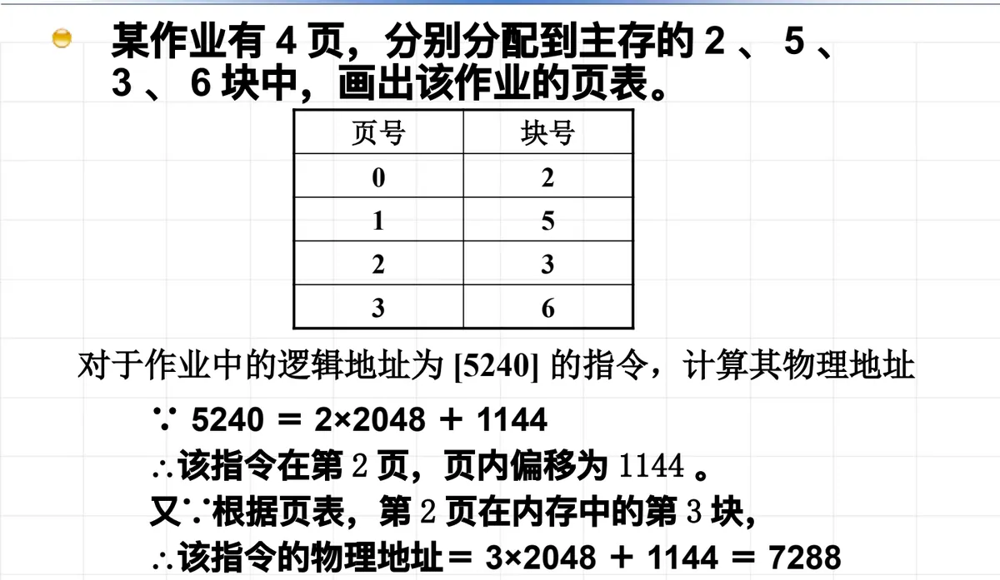

操作系统原理 · 第 7 章 主存管理
7.8 课堂练习
这一节把第 7 章的两道课堂练习讲透：一道考分页系统里地址位数怎么切，一道考逻辑地址到物理地址的完整变换。两道题用的是同一套知识——「页号 + 页内偏移」，做完它们，7.4 节的页式地址变换才算真正落地。
1. 已知地址长度和页面大小，求最大页面数
题目：在分页管理系统中，CPU 的地址长度为 16 位，页面大小为 2KB，求每个作业最大页面数。
分页系统把逻辑地址一分为二：高位是页号 p，低位是页内偏移 w。页内偏移要能覆盖一个页面里的每一个字节，所以它的位数由页面大小决定；地址总长里剩下的那几位，才归页号。于是这类题的第一步，是把页面大小写成 2 的整数次幂。
页面大小为 2KB，即 2×1024 = 2048 字节。因为 2048 = 211，所以页内偏移需要 11 位；CPU 地址共 16 位，留给页号的就是 16 − 11 = 5 位。
5 位页号可以编出 25 = 32 个不同的页号，因此每个作业最大页面数为 32。换句话说，这个系统最多允许一个作业拥有 32 个页面，再多的页就没有页号可编了。
易错点有两个：一是「2k」指的是 2KB = 2048 字节，不是 2 位、也不是 2000 字节，把它当成 2000 就取不到整数次幂；二是别把位数和字节数混着算——地址长度 16 位说的是「位」，页面大小 2KB 说的是「字节」，先统一到 2 的幂上再相减。
2. 由页表把逻辑地址变换成物理地址
题目：某作业有 4 页，分别被分配到主存的 2、5、3、6 号块中。先画出该作业的页表，再对逻辑地址 [5240] 处的指令计算其物理地址。
页表记录的是「页号 → 主存块号」的对应关系。按题目给出的分配情况，作业的页表如下：
| 页号 p | 主存块号 b |
|---|---|
| 0 | 2 |
| 1 | 5 |
| 2 | 3 |
| 3 | 6 |
接下来做地址变换，可以记成三步：分、查、拼。
（1）分：把逻辑地址拆成页号和页内偏移
页面大小为 2048 字节，用逻辑地址除以页面大小，商是页号，余数是页内偏移：
5240 = 2 × 2048 + 1144
∴ 页号 p = 2，页内偏移 w = 1144（2）查：用页号查页表
以页号 2 为索引查页表，得到对应的主存块号 b = 3，也就是第 2 页被装到了主存的第 3 块里。
（3）拼：块号乘页面大小，再加页内偏移
物理地址 = b × 页面大小 + w
= 3 × 2048 + 1144
= 7288所以这条指令的物理地址是 7288。这里最值得记住的一点是：页内偏移在「分」和「拼」两步里始终保持不变。分页之所以能把连续的虚页装到不连续的实页上，靠的正是这个性质——搬家只换「页」这一层，页内各字节的相对位置不动，程序的感觉不到自己被拆散过。

3. 这类题的通用步骤
- 化幂：把页面大小写成 2k，得到页内偏移位数 k；地址总长减 k 就是页号位数，页号位数决定最大页面数；
- 分：页号 p = 逻辑地址 ÷ 页面大小（取整），页内偏移 w = 逻辑地址 mod 页面大小；
- 查：用 p 查页表得到主存块号 b；页表项里若还有中断位、辅存地址等字段，那是请调（部分装入）时才用到的信息，见 7.4 节的缺页处理；
- 拼：物理地址 = b × 页面大小 + w。
本节小结
- 逻辑地址 = 页号 + 页内偏移；页内偏移位数由页面大小决定，页号位数 = 地址长度 − 页内偏移位数；
- 16 位地址、2KB 页面：页内偏移 11 位、页号 5 位，最大页面数 25 = 32；
- 地址变换三步——分（拆页号与偏移）、查（查页表得块号）、拼（块号 × 页面大小 + 偏移）；
- 逻辑地址 5240 在 4 页装入 2、5、3、6 块的作业里：p = 2、w = 1144，查表得块号 3，物理地址 = 3 × 2048 + 1144 = 7288；
- 页内偏移在变换前后不改变，这是分页能消除外部碎片的关键。